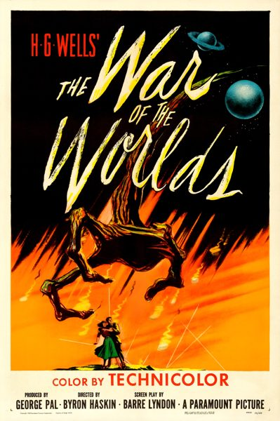

The War of the Worlds

Starring: Gene Barry, Ann Robinson, Cedric Hardwicke
Director: Byron Haskin
Writer: H. G. Wells, Barré Lyndon
Producer: George Pal
The War of the Worlds (also known in promotional material as H. G. Wells' The War of the Worlds) is a 1953 American science fiction thriller film directed by Byron Haskin, produced by George Pal and starring Gene Barry and Ann Robinson.
Trivia
- Won the Academy Award for Best Special Effects.
- Also nominated for: Academy Award for Best Film Editing; Academy Award for Best Sound.
- Based on The War of the Worlds (1897 serialized novel by H. G. Wells).
- Paramount Pictures first attempted to adapt The War of the Worlds when the studio bought the film rights to the novel in 1925.
- Ray Pomeroy began working on an outline with Cecil B. DeMille planned as director, but the project was put into turn-around.
- Alfred Hitchcock also entered discussions about adapting the novel with Wells and Gaumont-British may have optioned the rights, but the project did not go forward.
Filming Locations
- California
- Arizona
- Pal had planned for the final third of the film to be shot in the new 3D process to visually enhance the Martians' attack on Los Angeles.
- Location shooting took place in Corona, California, which stood in for the fictitious town of Linda Rosa.
Previous Showings
4 Runs • 1 Festival
All runs on record (4):
- July 20 - 23, 1991w/ Destination Moon
- July 2 - 3, 1997w/ Invaders from Mars
- January 16 - 18, 2004w/ Casablanca
- May 2 - 3, 2013The 1950sw/ 20 Million Miles to Earth